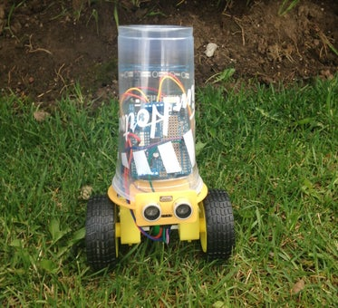
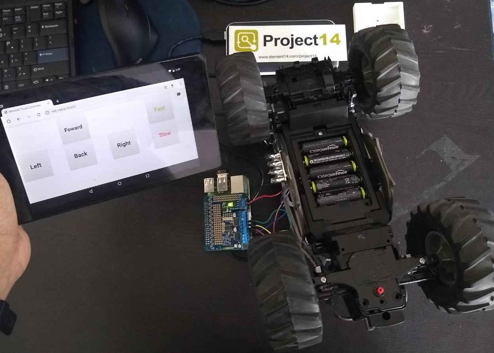
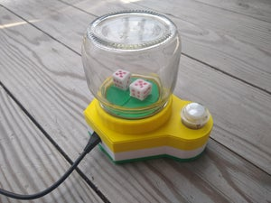
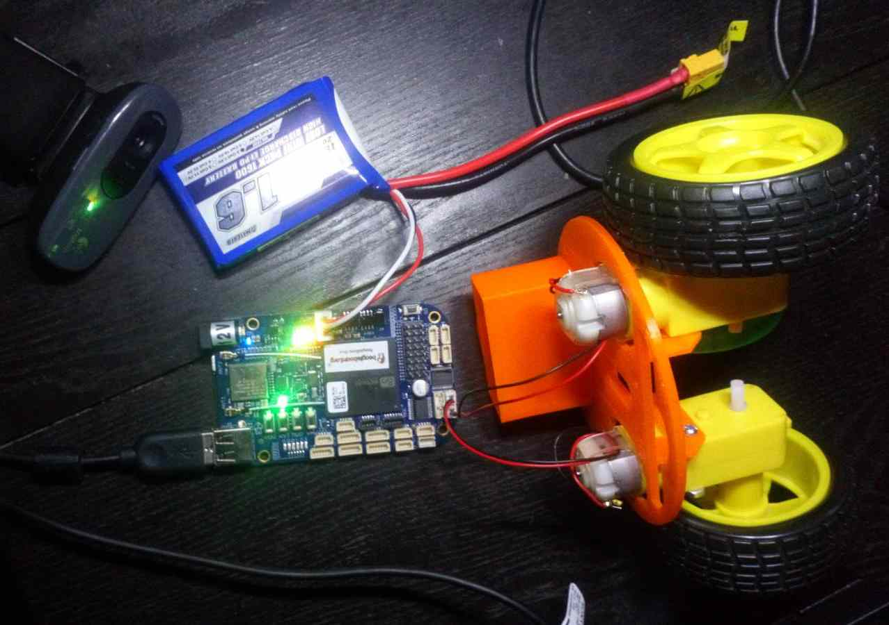
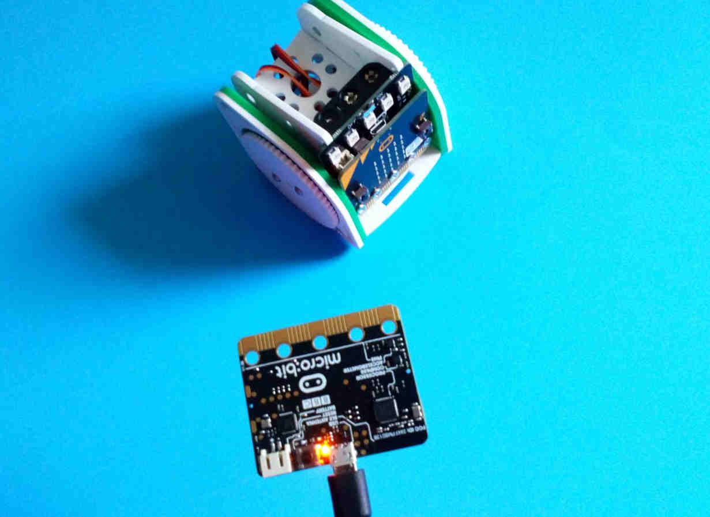

Cup Bot - simple 3D printed platform
Here is a great weekend robotics project to undertake with a friend. You will need a 3D printer handy to 3D print the STL files. You can either use a Arduino Uno, Raspberry Pi or a Beaglebone with
the appropriate motor driver.

Modify a Toy Truck using a Raspberry Pi
Here is a great way to impress your friends by modifying a broken toy Truck/Car with a Raspberry Pi and Adafruit's DC & Stepper Motor Pi HAT,
to the existing electronics. Here you have two option #1 Write a simple python program and use your keyboard to control the truck. And #2 write a python-flask based web app to control the truck using your mobile/tablet.

Continuous Servo Bot
This is a great way to start with robotics, for the brain of the bot we are using an Arduino Nano, 3D printed parts to hold the servo's and Ultrasonic sensors, and to power it up we are using a 2 cell Lipo battery.

Dice Roller
If you plan on playing any board/dice related games like ludo, build this project. You will need a continuous rotation servo, an arcade button and a arduino nano or ESP8266 board. If you plan to make your dice roller touchless using a web app hosted on the ESP8266 board.

BeagleBone Blue Robotics Controller Kit
BeagleBone Blue is an all-in-one Linux-based computer for robotics, with wifi/bluetooth, IMU/barometer, power regulation and state-of-charge LEDs for a 2-cell LiPo, H-Bridges, and discrete connectors for 4 DC motors+encoders, 8 servo

MOVE mini buggy kit for BBC microbit
The MOVE mini is a 2 wheeled robot that is suitable for autonomous operation, remote control projects via a Bluetooth application or being controlled using a second BBC microbit as a controller via the microbits radio functionaly.Read more in our blog post.